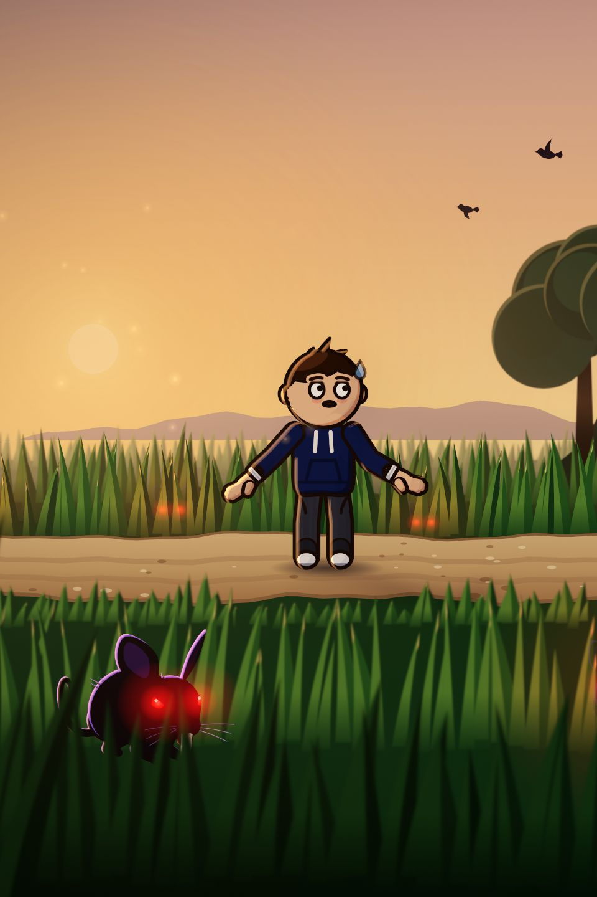
From the team behind Your Trainer Arc
The Vote Loop Playbook
How our series got 11,786 votes on one question in a day, and how to build the same loop into yours.
1.5M Instagram views in its first week
11 chapters with templates and checklists
October 2026
Inside
- The loop3
- The hook4
- The episode5
- The vote9
- The pinned comment and captions11
- Put the audience in the story12
- Clues and covers13
- Posting and growth14
- What not to do16
- A second series: Day 2317
- Checklists20
What the loop did in one week
- 1.5Mviews in the first week
- 470K+people reached
- 100K+votes across the series
- 70–80%retention throughout every part
- 94%of views from people who didn't follow us yet
- 11Kfollowers after one week
Views, reach and followers are Instagram insights for @yourtrainerarc on 27 October 2026, eight parts in (YouTube not included); votes are our total across every poll; the non-follower share is from 26 October. What worked for us is evidence, not a promise.
Chapter 1
The loop
Every part ends on a choice, and the next part opens on that choice. People come back because their answer is in the next video. That's the whole engine. The rest of this book is how to make each turn of it stronger.
- HookOpen inside the action, and credit last part's vote
- StoryA chase, not a lecture
- CliffhangerStop exactly at the choice
- VoteTwo or three physical options
- Credit"Most of you said…" opens the next part
Why it works
- Votes make people comment. In the story accounts we studied, reels without a vote got about 0.1 to 0.5 comments per 1,000 views. With a vote: 1 to 2.5. Comments tell the app people care.
- Votes bring people back. Our Part 2 kept 67% of Part 1's views (308K to 207K). The accounts we studied usually keep 30 to 50%.
- Votes compound. One story account kept 4 to 9 million views across six parts by opening each with "MOST OF YOU SAID…".
- Part 37,6672 options
- Part 46,3674 options
- Part 59,4203 options
- Part 611,7863 options
Chapter 2
The hook
A new viewer decides in about a second. A returning viewer wants to know what happened to their vote. The first four seconds have to serve both.
- Frame one is mid-action, with sound. No title card, no "previously on", no slow push across scenery.
- The first line is seven words or fewer. Second person, present tense, one stake word coloured red.
- Your star looks into the lens in the first frame. A face beats a landscape.
- Credit the vote by second four with a stamp. Returning viewers see their choice before they can swipe.
- One wide shot by second six that shows the goal, the threat and the odds together.
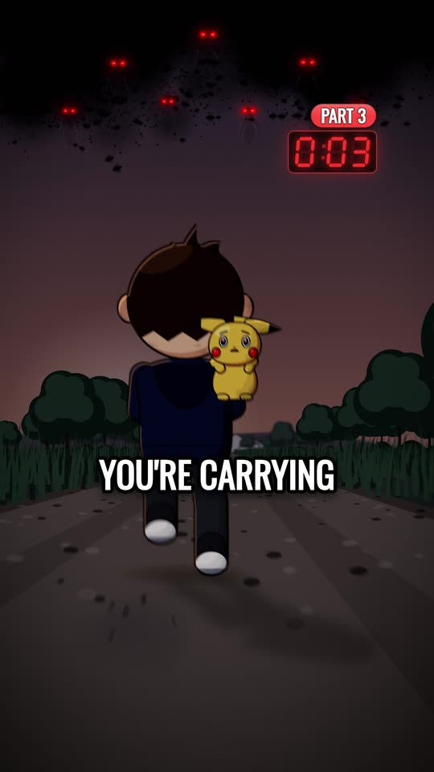
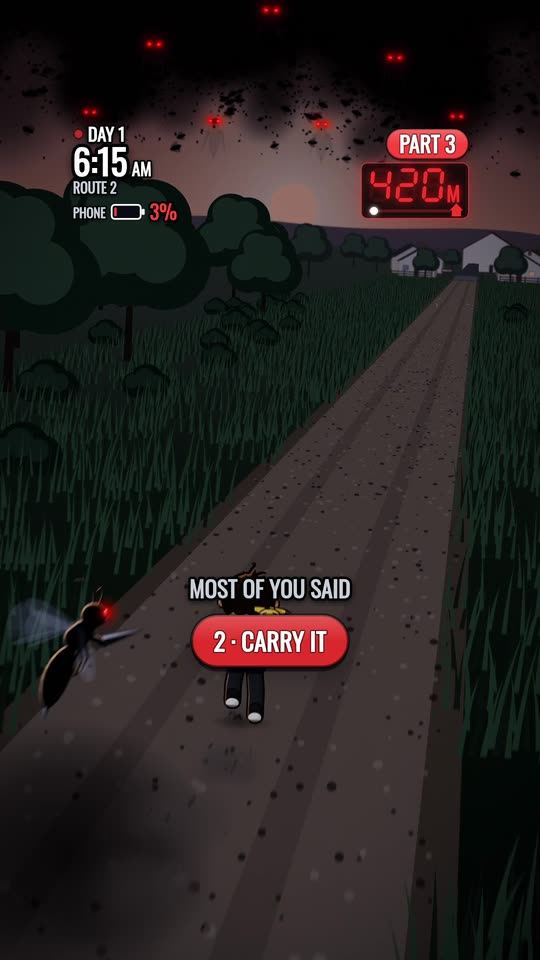
Our Part 3, second by second
- 0.0 sRunning at night, a drill punching the dirt behind your heel, the creature staring into the lens.
- 0.0 s"You're carrying a wild Pikachu. Bare-handed."
- 3.5 sMOST OF YOU SAID → 2 · CARRY IT ✓
- 5.2 sThe wide: you tiny on a path, forty red eyes, 400 METERS to safety.
0.0 s [your star mid-action, looking into the lens, with sound] 0.0 s "[7 words or fewer. 'You', present tense, one RED word]" 3.5 s MOST OF YOU SAID → [winning option] ✓ 6.0 s [one wide shot: the goal, the threat and the odds]
Chapter 3
The episode: a chase, not a lecture
Our best part and our worst part sat side by side. The difference wasn't the art. It was what the script asked the viewer to do.
| Part 3 (loved) | Part 4 (flopped) | |
|---|---|---|
| Something happens | every ~3 s | every ~12 s |
| New facts to hold | about 6 | about 30 |
| Words per sentence | 4.1 | 5.3 |
| Voices | 1 narrator | 4 voices |
| Shots that move | 78 of 79 | 37% of the runtime nearly still |
| Mood | dark, glowing, moving | bright, flat, static |
| Big, clip-able moment | yes, at 62% | none |
Pacing
- A new picture every 1.5 to 2.5 seconds, and nothing held longer than 3.5 seconds before the vote.
- Something happens about every three seconds, and the story turns about every seven.
- The kind of danger changes about every twenty seconds, each one closer to your body than the last.
- Run a ticking number the whole way: a distance, a battery, a clock. Plant the number that pays off a minute before it does, and don't mention it until then.
- One spectacle at 60 to 65% of the runtime: three or four seconds, full frame, then a second or two of silence.
- Each part is a full mini-arc, 75 to 170 seconds: hook, threat, a rule, a twist, the cliffhanger.
Chapter 3, continued
Writing the narration
- Second person, present tense, all the way. "Your arm goes numb. It slips."
- Four words a sentence, on average. About half our Part 3 sentences were fragments.
- Every line names something on screen right now. If the words say "a boot", the picture is a boot, big and centred.
- At most three explaining lines per part, each 12 words or fewer, each paid off by action within five seconds.
- Concrete nouns: drill, nest, phone, boot, band. Save abstract words for the one emotional beat.
- Never explain the mystery. State the facts and move on. That's what makes the comments argue.
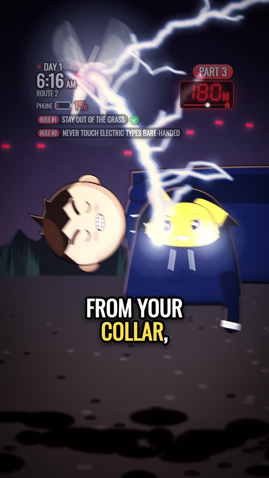
Three rhythm tools
- Countdown triplets"Three percent. Four. Nine."
- Opposite pairs"It wasn't spilling. It was saving."
- One-word hits"Fainted." "Run." "A boot."
Lines from Part 3, to read aloud
- "Your arm goes numb. It slips."
- "The buzzing behind you stops. And your pocket starts."
- "The phone goes hot. Sixty-eight. Forty. Ten."
- "It could get away. It doesn't."
- "Not trust. Not yet. But not fear."
Read your script out loud at the narrator's speed. If you run out of breath, the sentence is too long.
Chapter 3, continued
Escalation and shots
How the danger climbed in Part 3
- 0 sA physical chase: a swarm, 400 metres to go.
- 12 sA human plan: a net under a nest. "Someone knew that."
- 13 sThe thing you're saving hurts you. A viewer's fix brings relief.
- 36 sSilence. A message with no signal. A photo of you asleep. A boot.
- 58 sA trap: the swarm herds you, and your own rule becomes the choice.
- 70 sNear-misses, each closer: the post, your eye, the fall.
- 85 sThe payoff: the battery you watched climb, then the blast.
- 103 sAftermath clues: a leg band, a beam, "close enough to watch".
- 120 sA breather: dawn, the town.
- 136 sThe cold sting: the phone rings, and the man across the street has one like yours.
Shots
- Build the part from four or five "home" setups and keep returning to them, so the viewer is never lost: a rear chase, a front close-up, a prop close-up, a ground two-shot.
- Inserts are reactions, never illustrations. Object, then your face, then the same object closer. Never cut to something that's only being talked about.
- Every shot moves: running, pushing in, whipping across. A still frame reads as a mistake.
- Darkness flatters simple drawings. Glow, silhouettes and rim light hide shortcuts. Part 3 averaged 51 out of 255 for brightness; the bright, flat Part 4 averaged 94.
Chapter 3, continued
Captions, voice and the last check
Captions and safe zones
- One to four words per chunk, bold condensed capitals, white with a dark outline.
- Colour one word per chunk: yellow for new information, red for danger or the twist. Write numbers as digits: 3%, 6:11, 400 METERS.
- Keep every word and face in the safe frame. On a 1080×1920 frame: 120 px in from each side, nothing above 270 or below 1,480. From halfway down, stay left of 860, where the like and comment buttons sit. Captions go between 1,180 and 1,440, at most 640 px wide.
- One text layer at a time: a caption, or a card, or a stamp. Never three at once.
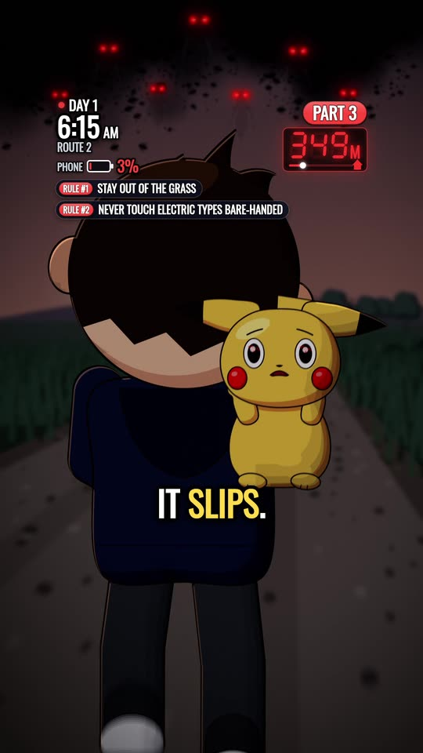
Voice
- One narrator the audience knows, about 2.6 words a second. Write fewer words rather than speeding up.
- Flat text-to-speech for characters was our biggest complaint. If a character can't be voiced well, the narrator tells us what they said.
The last check
- Watch the full final at full size, as a stranger, next to your best part, before you post.
- Check every frame for black, frozen or glitched frames. Ours caught a stretched clock, a black wedge and a one-frame snap that a normal watch-through missed.
- No story changes after the picture is locked. Every late change in Part 4 left a scar.
Chapter 4
The vote
The vote is the last thing people see and the first reason they come back. It has to feel like a real decision, about something real, right now.
- Two options, three at most.
- Plant the vote's object earlier. Part 1's phone at 3% became Part 3's battery, weapon and final choice: one percent, one call.
- Physical verbs about what's in the last frame. ANSWER IT or RUN beats "trust him" or "investigate".
- Each option pulls a different instinct: curiosity (find out), protection (keep it safe), escape, revenge.
- Never offer the passive option. Nobody votes to do nothing.
- Say it three ways at once: spoken, as a big caption, and as numbered pills with a one-line tag each.
- Keep the vote and end card under seven seconds, with something still moving underneath. Cut a sound off on the very last frame.
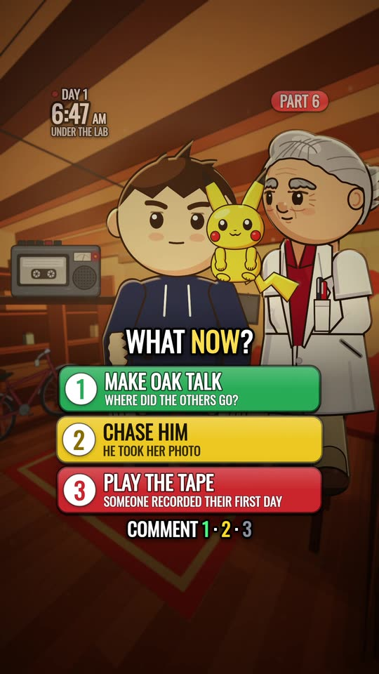
Said three ways, from Part 3
- Spoken"One percent. One call. Answer it, or run for the Pokémon Center? Comment one or two."
- CaptionANSWER IT / OR RUN?
- Pills1 · ANSWER · 1% ONE CALL 2 · RUN · TO THE POKÉMON CENTER
Chapter 4, continued
Our four votes, and what each taught us
| Vote | Votes | Split | Lesson |
|---|---|---|---|
| Part 3Answer the call / Run | 7,667 | 44 / 56 | Two physical options, both tempting. A near-even split. |
| Part 4Go out to him / Go with Oak / Stay inside / Find the girl | 6,367 | 29 / 48 / 4 / 19 | Too many options, and the passive one ("stay inside") got 4%. Also our weakest episode. |
| Part 5Catch another / Ask how he knew / Find out who he is | 9,420 | 31 / 42 / 27 | Three strong options, each pulling over a quarter. Our healthiest split. |
| Part 6Make Oak talk / Chase him / Play the tape | 11,786 | 58 / 13 / 30 | Our biggest vote, but "chase him" got 13%: one wasted slot. |
Design your vote
The object we planted earlier: ____________________ Option 1 (a physical verb): ____________________ pulls on: curiosity / protection / escape / revenge Option 2 (a physical verb): ____________________ pulls on: ____________________ Option 3 (only if it's as strong): ________________ Would I honestly be torn? yes / no The last frame shows: ____________________ The sound that cuts off: ____________________ How Part [N+1] opens for each option: 1 → ______________ 2 → ______________
Chapter 5
The pinned comment and captions
Instagram says posts that ask people to comment "a specific word, number, or emoji" may not be shown to new people. So we ask for the number in exactly two places: the buttons inside the video, and one pinned comment. The caption asks the story question in plain words.
- Pin three comments: the vote with its closing time; a funny or heartfelt fan comment, swapped daily (never a theory, because fans read a pin as a yes); and a note for newcomers.
- Keep voting open at least 24 hours, including a full US daytime, so every timezone gets a say.
- On YouTube you can pin only one comment, so pin the vote. Write "Part 1 is linked above the title" instead of "pinned on the profile".
YOU DECIDE PART [N+1] [Choice A], or [choice B]? Tell us what you'd do, and why. 1 = [A] · 2 = [B] · Votes close [day, time]
New here? Part 1 is pinned on the profile. Remember [a detail from Part 1]. It matters later. 👀
Part [N] · You chose [the winning option]. [The question this part leaves you with, in words.] [Choice A], [choice B] or [choice C]? The votes decide Part [N+1]. Parts 1-[N-1] are on the profile.
[A 3 to 5 word hook] ([Series name] Part [N])
Chapter 6
Put the audience in the story
- The stamp. MOST OF YOU SAID → the winning option, on screen in the first four seconds.
- The comment card. SOME OF YOU SAID, with a real viewer's idea that changes the plot within three seconds. In our Part 3, "wrap it in your jacket" stopped the shocks at 19 seconds. Nothing makes people comment like seeing a comment on screen.
- Reply like a person. React to what they actually wrote. Never reuse one reply more than twice on a post, and never end a reply by asking for the vote.
- Never confirm a theory. Every theory gets the same reply, so nobody can read your face.
- Hide or restrict hate and spam without replying, and check "View hidden comments": real votes end up there too.
- If the app says "Try again later", stop all liking, replying and commenting for 24 to 48 hours.
Replies we used
🤐 Saving this one. What's your proof?
Brave. [Why option 1 is bold]. What's the first thing you [do]?
Votes are closed: you chose [winner]. What's the first thing you'd do?
Part [N+1]: [day]. Follow and you won't miss it ⚡
Fair question. Every frame is drawn in code, no AI video. What did you think of the ending?
This made our day. Which moment got you: [moment A], [moment B] or [moment C]?
Chapter 7
Clues and covers
Hide one clue per part
Sends (shares) are Instagram's strongest signal to show a reel to new people, and people send clues. "Pause at 1:42, the instant after the flash" is a reason to forward a video to a friend.
- Hide it inside the spectacle or in a background you hold for a beat: a silhouette in a flash, a shape in the grass, a time on a photo.
- Point at it, don't explain it. End the vote pin with "(There's a clue hidden behind him 👀)".
- If nobody finds it in about 12 hours, post a hint with the exact second (template below).
- When someone finds it, pin their comment, reply "👀 We're not saying anything," and pay it off in a later part.
- Make surprises fair. Every twist should pay off something the viewer already saw, so it feels clever, not random.
Pause at [time]. Don't look at [the obvious thing]. Look [where].
Covers and titles
- Same layout every part: the series label, a huge PART number, two hook lines (white, with one yellow word) and a face.
- A face looking at something beats a scene.
- No spoilers in the cover, title, caption or pinned comment. Ask about the twist; never show it.
- Covers in a row make your profile read like a series. People start at Part 1.


Chapter 8
Posting and growth
Most of a part's reach to new people happens in its first one or two days. Spend your energy there.
- YouTube first, Instagram about an hour later. "New parts hit YouTube first" gives Instagram followers a reason to tap the link in your bio.
- Post often while it's hot. The story accounts we studied post two or three parts a day in their first week, with Part 2 within 6 to 12 hours of Part 1. One breakout lifts every part after it, so have parts ready.
- Chain the parts. On Instagram, use Link a reel: each part links to the next, and the newest links back to Part 1. On YouTube, set each Short's related video the same way.
- Twenty minutes a day, in three short check-ins: reply to the best comments, check every message folder, post the Story.
- Post a countdown Story as soon as the next part's time is set, ending five minutes after you post. It shows everyone the time where they live, and reminds them.
The Story week
| When | Story |
|---|---|
| Part night | Share the part, with a poll where one option means "watch it again". |
| Next morning | A quiz about a detail from the part: "What time did you wake up in Part 1?" |
| Next evening | A mystery with no sticker, so people can only answer by replying. That's how you get messages. |
| The day after | The best theories (no names), with an emoji slider: "How scared should you be?" |
| Vote closes | The result, with the same countdown added again, so everyone's reminders carry over. |
| After the next part | Last part's clue, behind a Reveal sticker. |
| Once a week | An "Add Yours" from one of your pictures, like "Your trainer name, Day 1". |
Chapter 8, continued
Growth levers and settings
- Trial Reels. Instagram shows them only to people who don't follow you. A trial version of our Part 1 reached 228K views on its own. Make a 20 to 30 second trailer from Part 1's hook.
- Shares come from clues and spectacles. Build at least one of each into every part.
- A broadcast channel, if you have it: one line each time a part goes up.
- Messages come from Story replies, emoji reactions and Reveal stickers. Followers who arrive from reels see your Stories last, so ask for replies, not comments, on Stories.
[What it is, in one line]. You're the [role]. You vote what happens. New parts on YouTube first 👇
Set once, on day one
- Highlights: START HERE, THEORIES, and SAFETY ("We never message first. We never run giveaways.").
- Sharing and reuse: allow sharing to Stories, reposts and remixes. Turn downloads off.
- Hidden Words on, with promo, collab, crypto and "DM me" added.
- Account Status: check you can still be recommended. Check again after any takedown.
- Limited interactions off. It hides messages from people who followed in the past week, which is nearly every new fan.
- Message controls: followers and others go to requests; Story replies from everyone; notifications on for the General tab.
- Your fan-made or copyright line saved as a text shortcut, if you use anyone else's world.
Read three numbers every day
- Reach from people who don't follow you. It should be most of your views. If it drops sharply after a change, undo the change. If it drops after a vote post, take the numbers out of the pinned comment too.
- Shares. They tell you which moments and clues travel. Build more of those.
- Comments per 1,000 views. Under 1 means the vote isn't landing. Make the options harder to choose between.
Chapter 9
What not to do
- Bait wording. "Comment 1 to unlock Part 4" or "Share or it dies" gets posts held back.
- The vote on the cover or in the caption's first line. Keep it in the video and the pin.
- Bought followers, engagement pods, follow-unfollow, giveaways. They're the patterns platforms punish.
- Auto-DM tools. They're exactly the pattern Instagram flags, and they message young fans first.
- Messaging fans first, or asking for real names, ages or selfies.
- A talking episode. If two characters explain the world for a minute, nothing is chasing anyone. That was our Part 4.
- Four options, or a "do nothing" option. Fewer votes, and one option nobody picks.
- Opening on the past. No recap, no reading out last part's results over a frozen frame.
- Confirming a theory or hinting at the next part. The argument is the engagement.
- Re-uploading the parts stitched together, or sending people to another app mid-story.
- Announcing a time you might miss. If you're late, post one Story with the new time, move the countdown and answer the "when?" comments. Never go silent.
- Posting a final nobody has watched end to end.
- Using official art, music or logos from someone else's world, or selling anything with their characters.
If a warning or takedown arrives
- Don't panic-delete everything, and don't fight it in public. Read which post was hit and why.
- Check Account Status in settings to see whether you can still be recommended.
- First one: remove any other post with the same problem. Second one: pause posting and rethink before going on.
- Don't open a replacement account and re-upload the same videos. That's against the rules too.
- Original characters and worlds remove this risk entirely. That's why the Arc Lab skill ships only original ones.
Chapter 10
A second series: Day 23
Everything so far comes from Your Trainer Arc, after the audience arrived. Day 23 is the same loop on day one, before anyone has voted: an original zombie survival series we made with the Arc Lab Series Skill.
Episode 1, second by second
- 0.0 s"You wake up. Something is at the door." The handle is already rattling on frame one.
- 3.2 s"Twenty-three days." The ticking number: a calendar with days 1 to 22 crossed out and 23 circled in red.
- 9.5 s"At the end of the hall, the doors are chained. And something is pushing back."
- 14.0 sAn eye in the gap between the doors, for about a second. That's the clue.
- 15.4 s"Then a dog barks. It knows the way out." The companion makes the first move.
- 22.1 s"Almost." The empty street, and one figure in the road, 59% of the way in.
- 24.0 sRULE #1 · STAY UNSEEN. "One turns. Then all of them."
- 27.3 sThe vote: "Run for the police car. Hide in the bus. Or go back inside. Comment one, two or three."
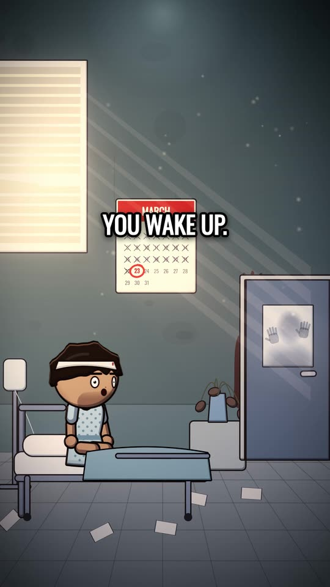
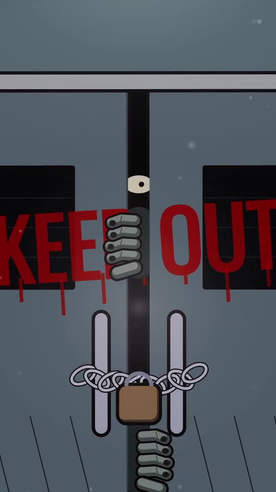
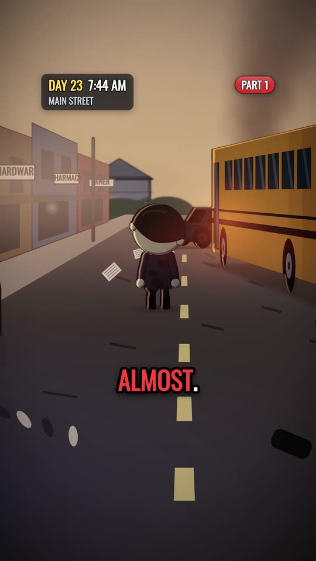
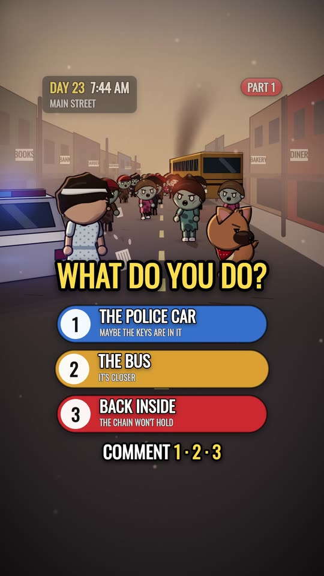
Chapter 10, continued
Planned before the first vote
The loop is easier to keep turning when the answers are decided before Episode 1 goes up. Day 23 started from a series bible: the world's laws, the cast, the mysteries and the episode where each one pays off. That file is never posted.
- 37.6 sEpisode 1, from the first frame to the end of the vote
- 77spoken words, about 4.5 a sentence
- 4laws in the world's rulebook
- 3vote options, each a place already on screen
- 4clues planted, two of them pointed at
- 1,128frames, every one checked before the final
These numbers come from the making, not from views: Episode 1 hadn't been posted when we wrote this.
What the plan decides
- The world's laws come first. The first one is on screen at 24 seconds: RULE #1 · STAY UNSEEN. One of the dead seeing you is enough, because when one turns, they all turn. A law the viewer can repeat gives every vote something to argue about.
- One big answer and one new mystery per episode. Episode 1 answers where everyone went: you slept for 23 days, and the town is dead. Then it opens a new question: who crossed off the days?
- Clues are planted, then left alone. Episode 1 plants four. The pinned comment points at two, the eye and the calendar. The other two sit in plain sight, unexplained. Each one already has the episode where it pays off.
- Teach before you vote. The police car and the bus are in every street shot before the vote, and "inside" is where you woke up. Nobody has to guess what an option means.
- The companion makes choices. The dog barks, turns, leads the way and stays by you when the street turns. It has at least four choices of its own every episode.
- Dread first, gore never. The dead are frightening by number and by silence: no wounds, no blood, no bites on screen.
Chapter 10, continued
The Day 23 vote and posting pack
The object we planted earlier: the police car and the bus, in every street shot Option 1 (a physical verb): RUN for the police car pulls on: escape · tag: MAYBE THE KEYS ARE IN IT Option 2 (a physical verb): HIDE in the bus pulls on: protection · tag: IT'S CLOSER Option 3 (only if it's as strong): GO back inside pulls on: curiosity · tag: THE CHAIN WON'T HOLD Would I honestly be torn? yes The last frame shows: you and the dog, turning to face the dead The sound that cuts off: the moans of the dead, on the last frame How Episode 2 opens for each option: written for all three before posting (not printed here)
The pinned comments
YOU DECIDE EPISODE 2: 1 THE POLICE CAR · 2 THE BUS · 3 BACK INSIDE? Tell us what you'd do, and why.
Something is looking at you at 0:14 👀 And look at the calendar again: who was crossing off the days?
Three covers, no spoilers
- One layout, three pictures: the room, the calendar, your face. Pick the one that stops you scrolling.
- None shows the street or the dead. The twist stays inside the video.
- The caption asks the question in words: "Run for the police car, hide in the bus, or go back inside? The votes decide Episode 2."
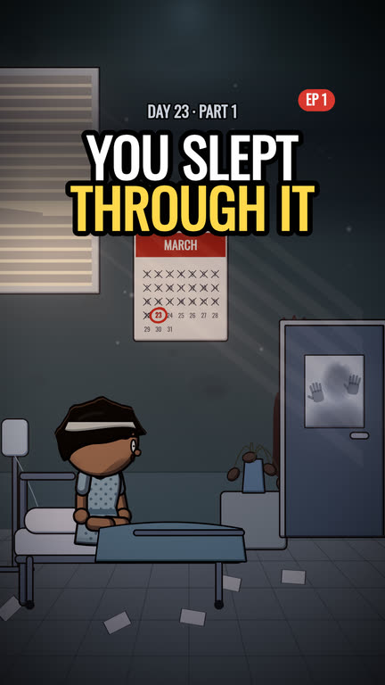
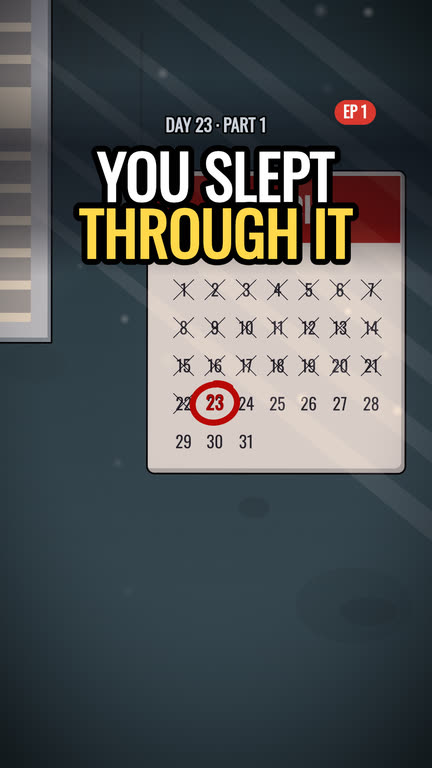
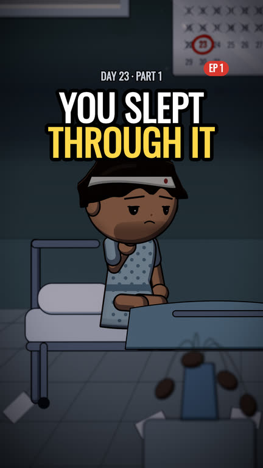
Chapter 11
Checklists
Before you post
- Frame one is mid-action, with sound
- First line: 7 words or fewer, "you", one red word
- Last vote credited by second four
- Goal, threat and odds in one wide by second six
- Something happens every ~3 seconds
- A ticking number runs the whole part
- One spectacle at 60 to 65%, then silence
- One clue hidden in it
- Two or three physical options, none passive
- Vote and end card under 7 seconds
- Every frame checked; full final watched
- Cover, title and caption have no spoilers
Part night
- YouTube first, Instagram an hour later
- Vote pin with closing time
- Newcomer pin
- Link the last part to this one
- Related video set on YouTube
- Share to Story, with a poll
- Reply to about 15 comments over the hour
The next two days
- Three check-ins a day, 5 to 10 minutes each
- Morning quiz Story
- Evening mystery Story, no sticker
- Clue hint if nobody has found it
- Count the vote and post the result
- Countdown for the next part
Every week
- Read reach from non-followers, shares and comments per 1,000 views
- Save the best viewer ideas for a SOME OF YOU SAID card
- Plan the next three parts, each ending on a real choice
- Post one Trial Reel trailer from Part 1's hook
- Start an Add Yours from one of your pictures
- Repeat the SAFETY Story: "We never message first."
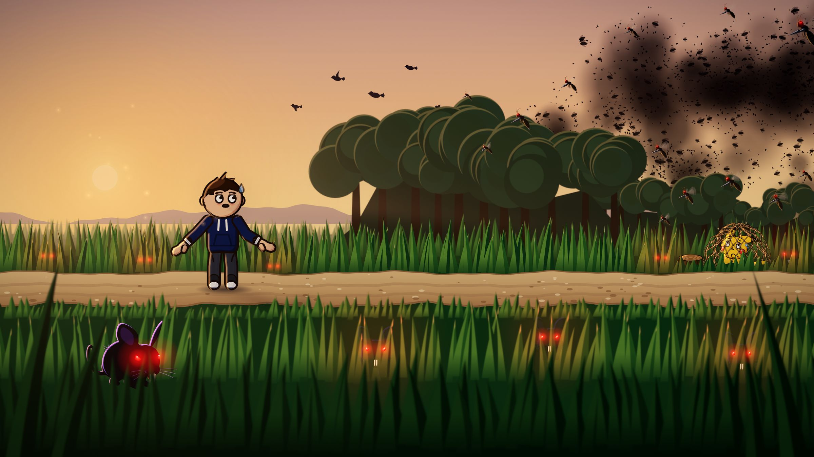
The skill builds this loop for you.
Every episode the Arc Lab Series Skill makes ends with the vote, the end card and the pinned comment, and the next script starts from your results. You type one idea; the skill builds the episode and stops three times for your OK.
- 40% off any tier at launch, for the waitlist, for 72 hours
- 48 hours of early access before everyone else
You're on the list. We'll email you the launch date first, with your 40% code.
Back to Arc LabShare it. Credit us.
This playbook is free. Share it, quote it, teach from it, and keep this line with whatever you use:
From The Vote Loop Playbook by Arc Lab: arclabstudios.com
Our words, templates and design are licensed CC BY-NC 4.0: credit Arc Lab with a link, and don't sell it or put it behind a paywall. Screenshots and covers aren't included. Made a series with the loop? Tag @yourtrainerarc.
© 2026 Arc Lab. Text, templates and design licensed CC BY-NC 4.0. Your Trainer Arc is an unofficial, fan-made series and is free to watch. Pokémon © Nintendo / Creatures / GAME FREAK / The Pokémon Company. Arc Lab is not affiliated with or endorsed by them, and the Arc Lab Series Skill contains no Pokémon characters, art or sounds. Numbers are from our own Instagram insights and the vote counts shown in each part.